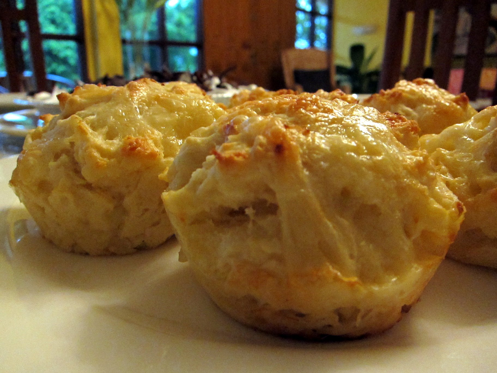

College Baking Made Easy
Source: Maurina Rara
Image by Maurina Rara (Creative Commons 2.0)
Ingredients: 2 cups all-purpose flour, 1/2 cup of white sugar, 1 1/2 cups of any cheese of choice, 1 tablespoon baking powder, 1 teaspoon salt, 1/2 teaspoon baking soda, 1 cup plain yogurt, 2 eggs, 1/4 cup butter
Step 1: Preheat oven to 400 degrees F (200 degrees C). Grease 12 large muffin cups.
Step 2: Mix flour, sugar, baking powder, salt, and baking soda together in a large mixing bowl; stir Cheddar cheese into the flour mixture. Pour yogurt, eggs, and butter over the flour mixture; stir until the dry ingredients are just moistened. Spoon the batter into the prepared muffin cups.
Step 3: Bake in the preheated oven until the tops just start to lightly brown, 18 to 20 minutes.
Source: allrecipes.com